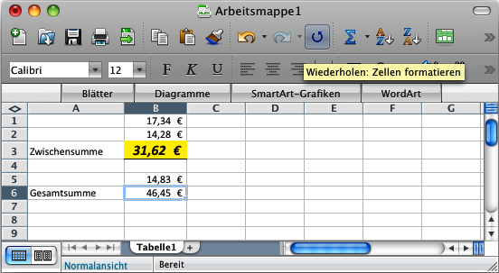
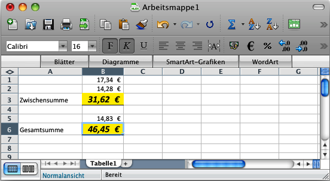

| Usability Pattern | Wiederholung |
|---|---|
| Problem |
Benutzer möchten die zuletzt ausgeführte Aktion wiederholen, also mit gleichen oder ähnlichen Eingabewerten erneut ausführen. |
| Lösung |
Erlaube Benutzern, ausgeführte Aktionen auf einfache Weise zu wiederholen, ohne alle Eingabewerte ein weiteres Mal eingeben zu müssen. Bei der Wiederholung der Aktion sollte das System die Eingabewerte (Parameter) der vorigen Ausführung übernehmen, wenn dies möglich und sinnvoll ist. Häufig möchten Benutzer auch eine ausgeführte Aktion in leicht veränderter Weise, z. B. auf anderen Datenobjekten, wiederholen. Wo dies eindeutig ist, sollten die Eingabewerte für die erneute Ausführung der Aktion automatisch ersetzt werden; andernfalls sollte das System den Benutzer zur Eingabe auffordern. Gestalte die Benutzungsschnittstelle so, dass Benutzer einfach erkennen können, welche Aktionen wiederholt werden können. |
| Illustration |
In einem Textverarbeitungsprogramm legt der Benutzer in einem Dialogfeld verschiedene Formatierungsvorgaben (z. B. Schriftart und -größe, Zeilenabstand und Ausrichtung) für einen markierten Textabsatz fest. Anschließend markiert der Benutzer einen anderen Textabsatz und wählt die Aktion „Formatierung wiederholen“, um auch für diesen Absatz die gleichen Formatierungsvorgaben festzulegen. Das System übernimmt daraufhin für den neu markierten Absatz die zuvor gewählten Vorgaben, ohne dass der Benutzer sie erneut eingeben muss. |
| Beispiel |
Microsoft® Excel® 2008 für Mac: Funktion „Wiederholen“ Excel erlaubt Benutzern, bestimmte Aktionen zu wiederholen. Im Beispiel hebt der Benutzer die Zelle B3 mit dem Wert „31,62€“ durch eine auffällige gelbe Formatierung hervor. Anschließend markiert er eine andere Zelle (die Zelle B6 mit dem Wert „46,45€“) und wählt über die Werkzeugleiste die Aktion „Wiederholen: Zellen formatieren“ (Abbildung 1), um die Formatierung auch für diese Zelle zu übernehmen (Abbildung 2). Excel wiederholt somit die ausgeführte Aktion „Zellformatierung“ in leicht variierter Form: die Formatierungseinstellungen werden als Parameter übernommen, der Parameter „Zu formatierende Zelle“ wird durch die vom Benutzer aktuell ausgewählte Zelle ersetzt. 
Abbildung 1  Abbildung 2 |
| Nutzungskontext |
|
| Begründung | Benutzer arbeiten effizienter mit dem System, wenn sie Aktionen, die häufig mehrfach ausgeführt werden, einfach und bequem wiederholen können. Sie müssen Eingabewerte, die sie bereits bei der ersten Ausführung der Aktion eingegeben haben, kein (aus Benutzersicht unnötiges) weiteres Mal eingeben. |
| Risiken, Nachteile, Kosten |
Die durchgängige Umsetzung des Features ist aufwändig; sie ist nur zu rechtfertigen, wenn für einen nennenswerten Anteil der insgesamt angebotenen Aktionen eine Wiederholung aus fachlicher Sicht sinnvoll und aus technischer Sicht möglich ist. Für Benutzer sollte die Wiederholbarkeit einer Aktion der Normalfall und die Nichtwiederholbarkeit die Ausnahme sein. Sind nur wenige der insgesamt verfügbaren Aktionen wiederholbar, besteht die Gefahr, dass das Systemverhalten für Benutzer inkonsistent erscheint und nicht erwartungskonform ist. |
| Zusammenspiel |
Ergänzung Globales Undo Die Wiederholung von Aktionen kann mit einem Globalen Undo (Rückgängigmachen ausgeführter Aktionen) kombiniert werden, da beide Patterns atomare Aktionen voraussetzen und häufig ähnlich umgesetzt werden. Dabei ist der Unterschied zwischen Wiederholung und Redo (als Gegenpart zu Undo) zu beachten: Wiederholung führt eine bereits ausgeführte Aktion erneut aus; Redo nimmt die zuletzt ausgeführte Undo-Aktion zurück. Alternative Gute Standardwerte Als einfachere Alternative zur Wiederholung von Aktionen kann das System bei der Ausführung einer Aktion die Eingabewerte der vorherigen Ausführung als gute Standardwerte vorschlagen. Benutzer müssen die Werte dann ebenfalls nicht erneut eingeben. |
| Anforderungserhebung |
Identifiziere wiederholbare Aktionen (repräsentiert durch Use-Case-Abläufe), deren Wiederholung fachlich möglich und aus Sicht des Benutzers sinnvoll ist.
|
| Anforderungsspezifikation |
Spezifiziere, für welche Interaktionen das Usability Pattern „ Wiederholung “ eingesetzt wird. Annotiere und ergänze dazu vorhandene Use Cases :
|
{kind=link}
{kind=link}